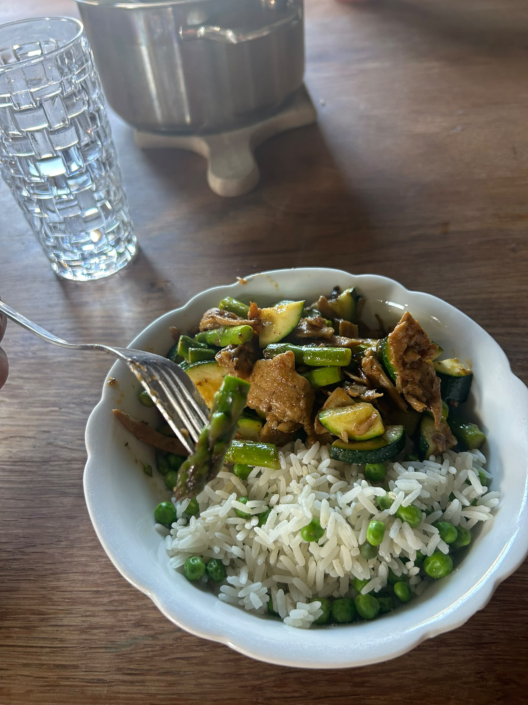
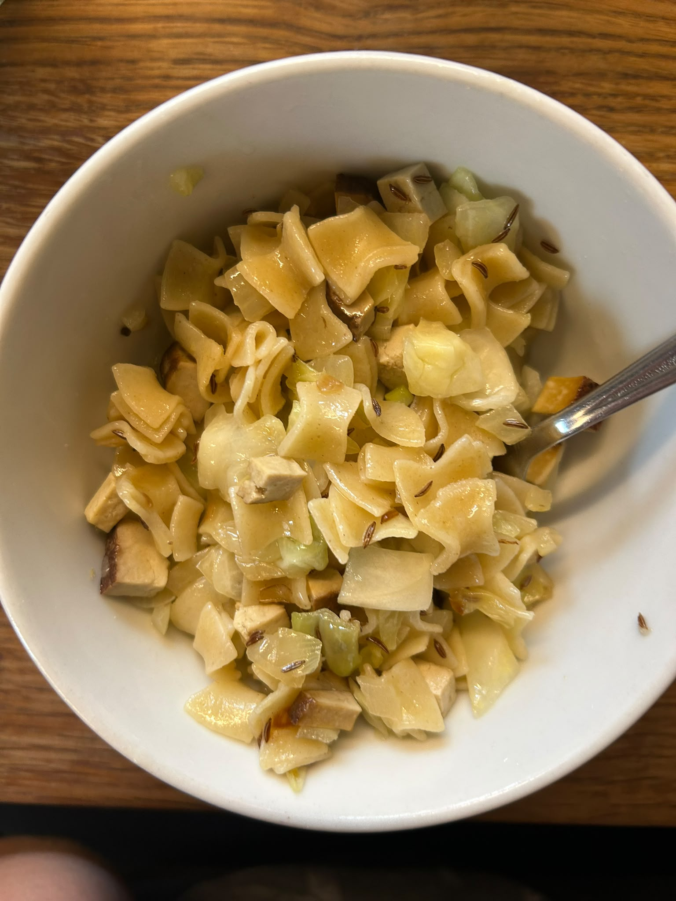
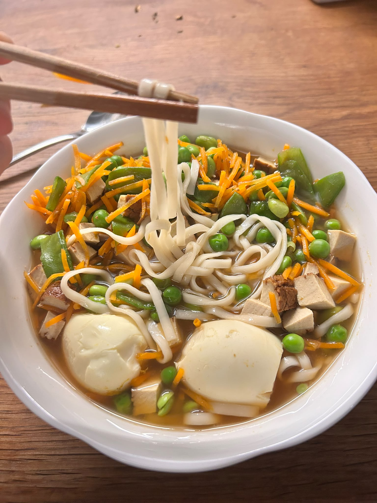
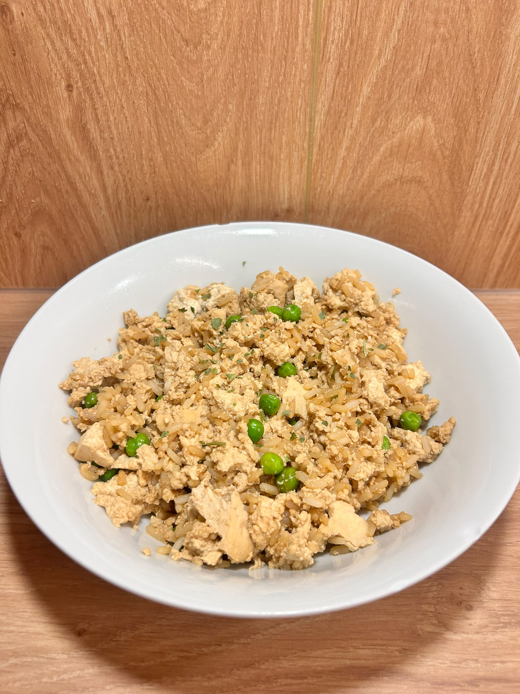

Gemüse ♡ Reis ♡ Seitan ♡ Öl ♡ SojasauceSeitan-Gemüse mit Erbsenreis
Verschiedenes Gemüse wird mit fertigem oder selbstgemachtem Seitan zu einer leckeren Pfanne. Erbsenreis ergänzt das Gericht perfekt.
GESUND ♡ LECKER ♡ EINFACH
Fünf Bausteine – schlau kombiniert. Entdecke, wie einfach gesundes Kochen sein kann.
Aus einzelnen Teilen kombiniert
...besteht aus einfachen Zutaten welche auf leichte Art und Weise zubereitet werden und zum Schluss entweder direkt in der Pfanne gemischt oder getrennt am Teller angerichtet werden. Der Zusatz A2 leitet sich von dem System für Sprachen ab (A1 für komplette Anfänger - unser Bausteinsystem, bis C2 für beinahe auf Muttersprachenniveau).
Beispiel-Gerichte
Schnell und einfach mit System zubereitet.

Gemüse ♡ Reis ♡ Seitan ♡ Öl ♡ SojasauceVerschiedenes Gemüse wird mit fertigem oder selbstgemachtem Seitan zu einer leckeren Pfanne. Erbsenreis ergänzt das Gericht perfekt.

Gemüse ♡ Nudeln ♡ Tofu ♡ Öl ♡ Salz und KümmelKraut und Zwiebeln werden in einer Pfanne mit Öl gedünstet und dann mit leckerem Tofu und gekochten Nudeln gemischt.

Gemüse ♡ Nudeln ♡ Tofu ♡ Ei ♡ Misopaste und SuppenpulverWürzige Misosuppe zusammen mit ganz vielen leckeren Einlagen ergiebt ein wundervolles Soulfood Gericht.

Erbsen ♡ Reis ♡ Tofu ♡ Sojasauce und KalanamakWie der bekannte Eierreis beim Asiarestaurant schmeckt dieses Gericht lecker und ist einfach zu kochen. Diesmal wird die große Portion Gemüse zusätzlich durch zb Salat eingebracht. HIGH PROTEIN
GUT ZU WISSEN
Was steckt in unseren Lebensmitteln? Wie werden sie zubereitet und richtig gelagert? In der Warenkunde lernst du die wichtigsten Grundlagen kennen.
Zur Warenkunde →